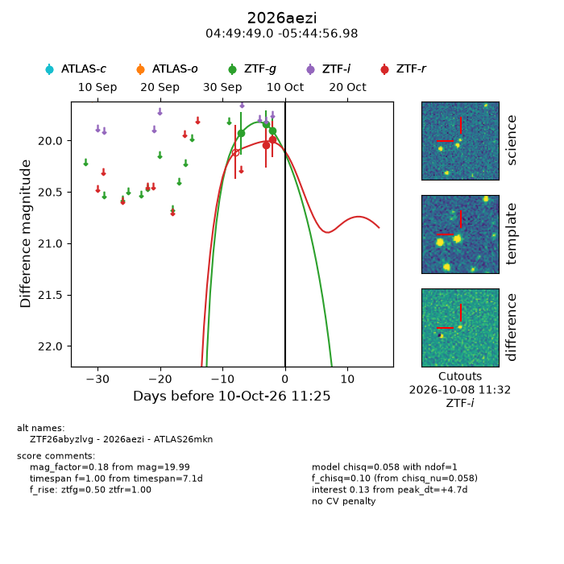
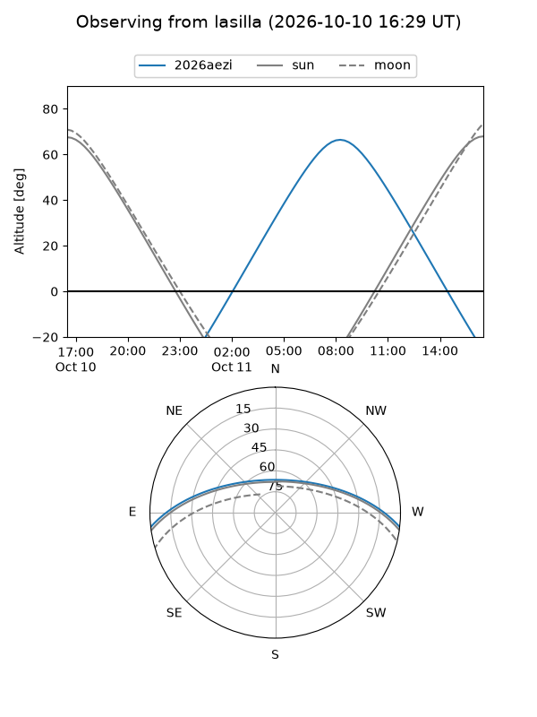
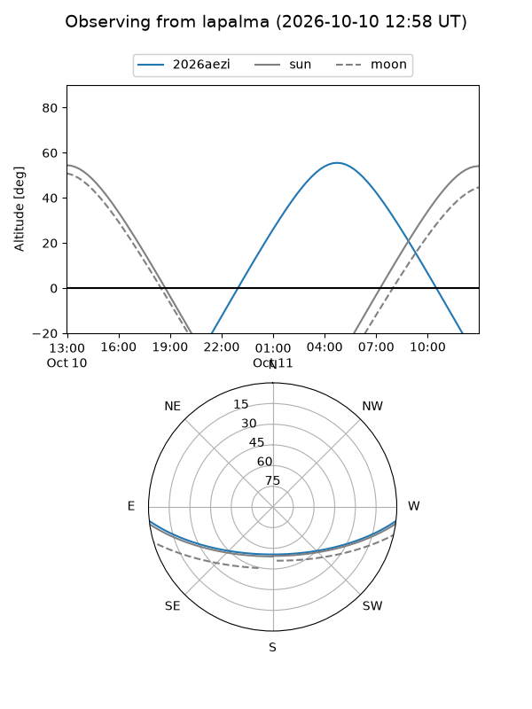
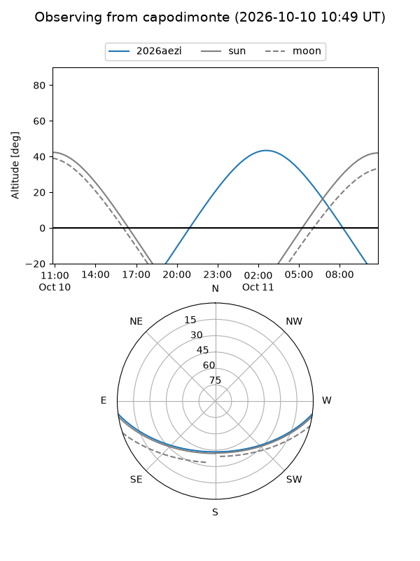
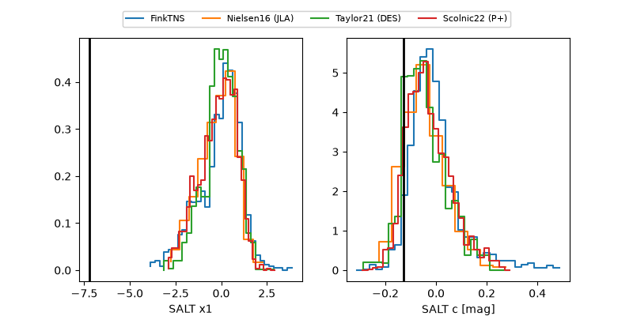

2026aezi
Target 2026aezi at 2026-10-10 11:26
Aliases and brokers:
FINK-ZTF: ztf.fink-portal.org/ZTF26abyzlvg
Lasair-ZTF: lasair-ztf.lsst.ac.uk/objects/ZTF26abyzlvg
ALeRCE-ZTF: alerce.online/object/ZTF26abyzlvg
YSE-PZ: ziggy.ucolick.org/yse/transient_detail/2026aezi
TNS name: wis-tns.org/object/2026aezi
Direct TNS query: direct search
alt names
ZTF26abyzlvg (ztf,fink_ztf)
2026aezi (tns,yse)
ATLAS26mkn (atlas)
Coordinates:
equatorial (ra, dec) = 72.4543,-5.74916
equatorial (HMS+DMS) = 04:49:49.03,-05:44:56.98
galactic (l, b) = (203.6358,-29.59364)
Flags:
peak dt: +4.7
Photometry:
last ztfg=19.90, ztfr=19.99
3 ztfg, 2 ztfr detections
Lightcurve

Visibility



Additional plots
